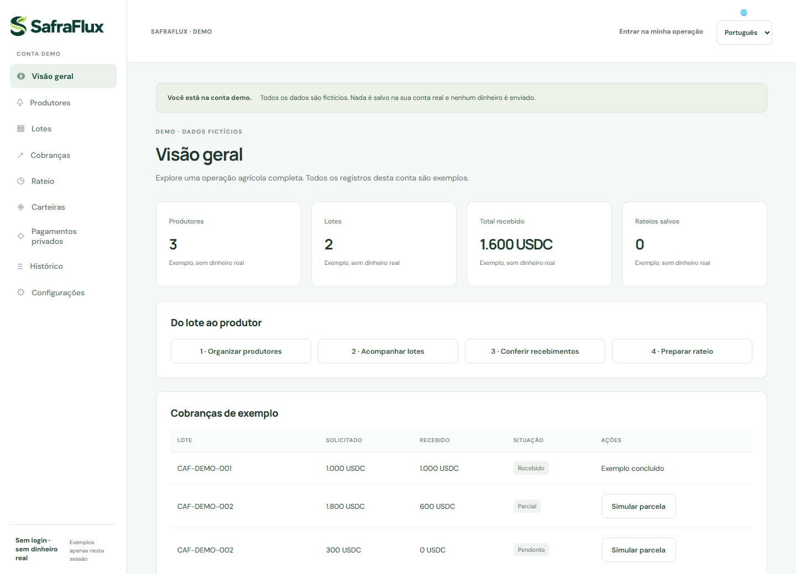

Organizar o lote
Produtores, quantidades entregues e contexto da venda no mesmo fluxo.
MULHERES QUE CONSTROEM · BRASIL
Somos a SheBuilds. Conectamos nossas perspectivas para transformar problemas reais em soluções com propósito.
Beatriz, Sonia & Olivia
De três cantos do Brasil, construindo juntas.
01 / NOSSA ESSÊNCIA
Somos Beatriz, Sonia e Olivia. A SheBuilds é o encontro das nossas trajetórias, da vontade de criar e de um olhar atento para as pessoas por trás de cada problema.
Trabalhamos remotamente, de Pernambuco, Brasília e São Paulo. No SafraFlux, Beatriz e Sonia deram origem à ideia, Beatriz desenvolve a solução e Olivia contribui para aprimorar o negócio.
Começamos pelo café: uma venda pode reunir o trabalho de várias famílias. Nossa pergunta é simples — como conectar esse recebimento a uma explicação clara da participação de cada produtor?
As pessoas por trás das ideias ↗02 / NOSSO PROJETO EM FOCO
AGROTECH · WEB3Uma venda coletiva. Uma participação clara para cada produtor.
O SafraFlux conecta lotes agrícolas, recebimentos em USDC e memória de rateio. Para cooperativas e pequenas exportadoras de café que precisam organizar vendas, acompanhar parcelas e prestar contas.
Demo pública com dados fictícios. Sem login ou dinheiro real.

Produtores, quantidades entregues e contexto da venda no mesmo fluxo.
Cobranças, parcelas e verificação de recebimentos conforme a rede.
Memória de rateio com base e prêmio de qualidade separados por produtor.
Cálculo de rateio não envia dinheiro. O café é nosso ponto de partida; benefícios e adoção serão avaliados em pilotos.
03 / TRAJETÓRIAS QUE SOMAM
Projetos reconhecidos no percurso das nossas integrantes. Experiências que trazemos para o que construímos juntas hoje.
Conectando produtores rurais, compradores institucionais e logística.
No portfólio de Beatriz ↗Um MVP que une gamificação, reciclagem e educação ambiental.
No portfólio de Beatriz ↗Tecnologia para comunidades quilombolas e preservação do Cerrado.
No portfólio de Beatriz ↗Inteligência artificial e cibersegurança com um olhar para o impacto social.
No portfólio de Beatriz ↗Reconhecimentos e descrições apresentados no portfólio público de Beatriz. Estes projetos fazem parte de sua trajetória em outras equipes; o SafraFlux é a criação conjunta de Beatriz, Sonia e Olivia.
04 / AS CRIADORAS
Por trás de cada solução, pessoas que perguntam, experimentam e constroem.
IDEAÇÃO & DESENVOLVIMENTO
Coidealizadora e desenvolvedora do SafraFlux. Sua trajetória conecta tecnologia, saúde, design e criação de soluções digitais.
Explore meu portfólio ↗IDEAÇÃO DA SOLUÇÃO
Coidealizadora do SafraFlux com Beatriz. Participa da construção de uma solução que aproxima a operação agrícola da prestação de contas ao produtor.
Explore meu portfólio ↗CONSTRUÇÃO DO NEGÓCIO
Criadora do SafraFlux ao lado de Beatriz e Sonia. Entrou na equipe para contribuir com o aprimoramento do negócio e a evolução da proposta.
Explore meu portfólio ↗05 / CONTINUE EXPLORANDO
O PRÓXIMO CAPÍTULO É COLETIVO
Uma conversa pode ser o começo de uma colaboração.
Conecte-se com a equipe e conheça nossas trajetórias.